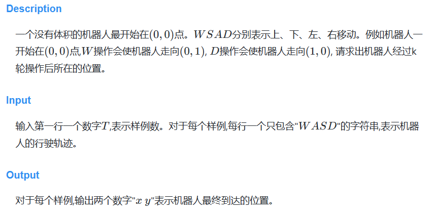
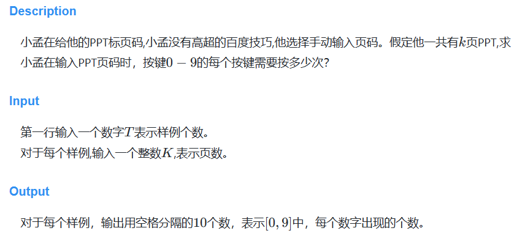
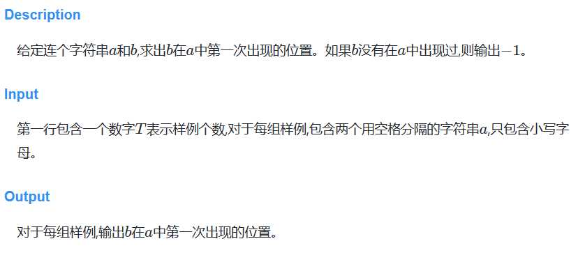
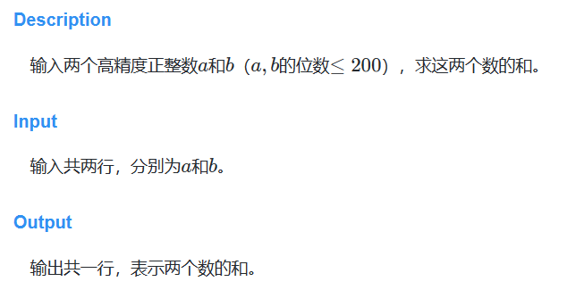
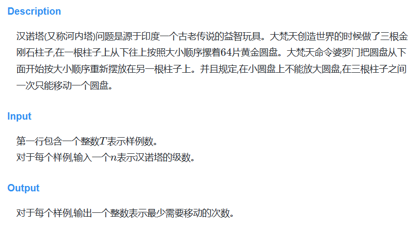
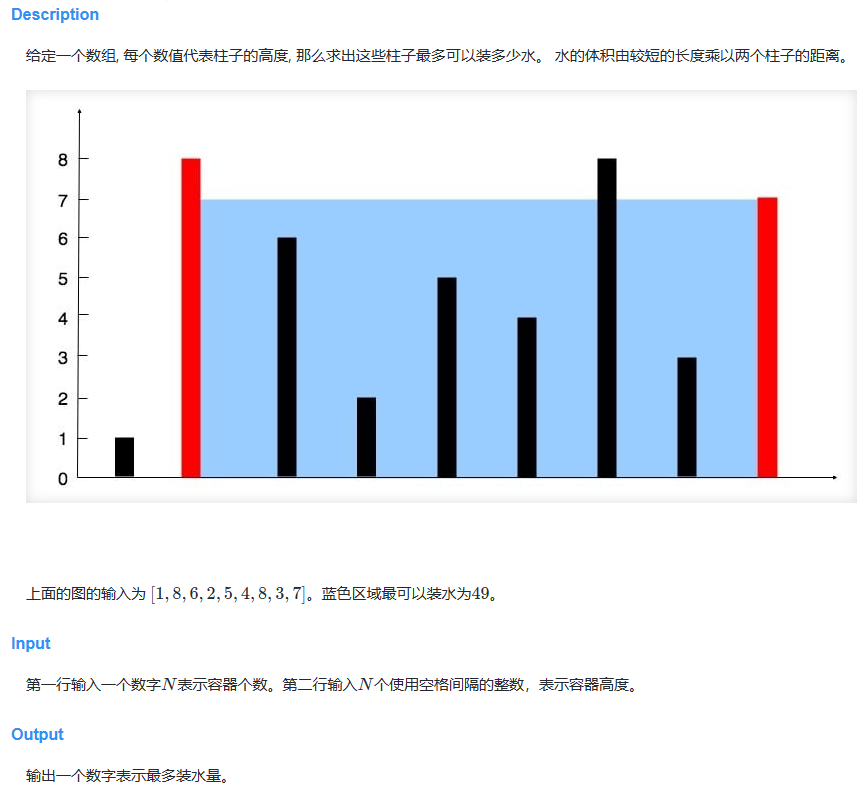
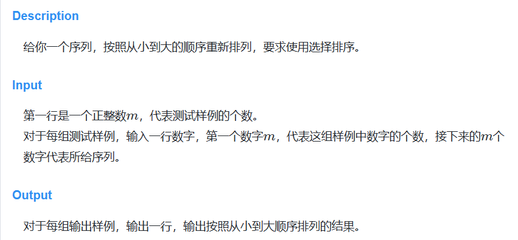
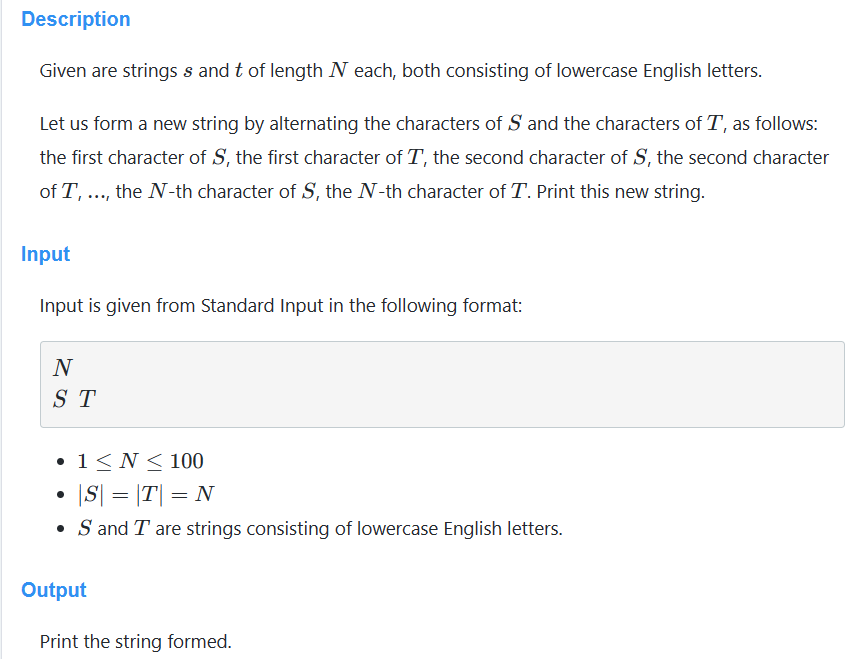

一&二章 基础算法
A.机器人模拟

sample input
sample output
solution
1 2 3 4 5 6 7 8 9 10 11 12 13 14 15 16 17 18 19 20 21 22 23 24 25 26 #include <iostream> #include <string> using namespace std;int main () int num = 0 ; cin >> num; string move; int * pos = new int [2 ]; for (int i = 0 ;i<num;i++){ cin >> move; pos[0 ] = pos[1 ] = 0 ; for (int j =0 ;j<move.length ();j++){ if (move[j] == 'W' ){ pos[1 ]++; }else if (move[j] == 'S' ){ pos[1 ]--; }else if (move[j] == 'A' ){ pos[0 ]--; }else { pos[0 ]++; } } cout << pos[0 ] << " " << pos[1 ] << endl; } }
B.页码统计

sample input
sample output
1 2 1 2 1 1 1 1 1 1 1 1 0 1 1 1 1 1 0 0 0 0
solution
目前此方法过于繁琐
1 2 3 4 5 6 7 8 9 10 11 12 13 14 15 16 17 18 19 20 21 22 23 24 25 26 27 28 29 30 31 32 33 34 35 36 37 38 39 40 41 42 43 44 45 46 47 48 49 50 51 #include <iostream> using namespace std;int main () int num = 0 ; cin >> num; int pageNum = 0 ; int * res = new int [10 ]; for (int i = 0 ;i<num;i++){ cin >> pageNum; while (pageNum >0 ){ if (pageNum>0 && pageNum<=9 ){ res[pageNum]++; }else if (pageNum<=99 ){ res[pageNum%10 ]++; res[pageNum/10 ]++; }else if (pageNum<=999 ){ res[pageNum%10 ]++; res[(pageNum-(pageNum/100 )*100 )/10 ]++; res[pageNum/100 ]++; }else if (pageNum<=9999 ){ res[pageNum%10 ]++; res[(pageNum-(pageNum/100 )*100 )/10 ]++; res[(pageNum-(pageNum/1000 )*1000 )/100 ]++; res[pageNum/1000 ]++; }else if (pageNum<=99999 ){ res[pageNum%10 ]++; res[(pageNum-(pageNum/100 )*100 )/10 ]++; res[(pageNum-(pageNum/1000 )*1000 )/100 ]++; res[(pageNum-(pageNum/10000 )*10000 )/1000 ]++; res[pageNum/10000 ]++; }else if (pageNum<=999999 ){ res[pageNum%10 ]++; res[(pageNum-(pageNum/100 )*100 )/10 ]++; res[(pageNum-(pageNum/1000 )*1000 )/100 ]++; res[(pageNum-(pageNum/10000 )*10000 )/1000 ]++; res[(pageNum-(pageNum/100000 )*100000 )/10000 ]++; res[pageNum/100000 ]++; }else { res[1 ]++; res[0 ]+=6 ; } pageNum--; } for (int i = 0 ;i<10 ;i++){ cout << res[i] << " " ; res[i] = 0 ; } cout << endl; } }
D.字符串

sample input
sample output
solution
1 2 3 4 5 6 7 8 9 10 11 12 13 14 15 import java.util.Scanner;public class Main { public static void main (String[] args) { Scanner s = new Scanner (System.in); int num = s.nextInt(); String qaq = s.nextLine(); for (int i = 0 ;i<num;i++){ String[] parts = s.nextLine().split(" " ); String target = parts[0 ]; String index = parts[1 ]; System.out.println(target.indexOf(index)); } } }
E.高精度加法

sample input
1 2 1111111111111111111111111111111111 9999999999999999999999999999999999
sample output
1 11111111111111111111111111111111110
solution
因为a和b的位数远远大于正常计算机中所能表示的整数范围，所以输入的值均为string类型，因此考虑加法也应当构造一个新的字符串，每位相加后追加到新字符串后，最后反转输出即可
注意每次相加都要有一个变量来保存余数，同时不要忘记最后一位（也就是输出后的第一位）可能存在进位
小技巧：将int转换为char，3+‘0’ = 3
将char转换为int，int('3'-'0') = 3
将char转换为string，string(size_type n,char c) 说明：创建一个包含n个元素的string对象，其中每个元素都被初始化为字符c
1 2 3 4 5 6 7 8 9 10 11 12 13 14 15 16 17 18 19 20 21 22 23 24 25 26 27 28 29 30 31 32 33 34 35 #include <iostream> #include <string> #include <algorithm> using namespace std;int main () string a,b; cin >> a; cin >> b; string res = "" ; int r = 0 ; int indexA = a.length ()-1 ; int indexB = b.length ()-1 ; while (indexA >=0 && indexB >=0 ){ res += string (1 ,(((int (a[indexA]-'0' )+int (b[indexB]-'0' )+r)%10 )+'0' )); r = (int (a[indexA]-'0' )+int (b[indexB]-'0' )+r)/10 ; indexA--; indexB--; } while (indexA >= 0 ){ res += string (1 ,(int ((a[indexA]-'0' )+r)%10 +'0' )); r = int ((a[indexA]-'0' )+r)/10 ; indexA--; } while (indexB >= 0 ){ res += string (1 ,(int ((b[indexB]-'0' )+r)%10 +'0' )); r = int ((b[indexB]-'0' )+r)/10 ; indexB--; } if (r){ res += "1" ; } reverse (res.begin (),res.end ()); cout << res << endl; }
H.汉诺塔

sample input
sample output
solution
这个题就是输出2^n-1，但是请注意不能用位移操作，如果是左移40位，正常来讲int是32位，也就是左移40%32 = 8位，所以结果不是240-1而是2 8-1
用pow函数时记得赋值为long long，否则会产生Wrong Answer
1 2 3 4 5 6 7 8 9 10 11 12 13 14 15 #include <iostream> #include <cmath> using namespace std;int main () int num = 0 ; cin >> num; int n = 0 ; while (num){ cin >> n; long long res = pow (2 ,n)-1 ; cout << res <<endl; num--; } }
M.最多水容器
image-20240505173330898
sample input
sample output
solution
这是比较经典的双指针问题
1 2 3 4 5 6 7 8 9 10 11 12 13 14 15 16 17 18 19 20 21 22 23 24 #include <iostream> using namespace std;int main () int res = 0 ; int i = 0 ; int total = 0 ; cin >> total; int j = total-1 ; int * sample = new int [total]; for (int i = 0 ;i< total;i++){ cin >> sample[i]; } while (i < j){ int area = (j-i)*min (sample[j],sample[i]); res = max (area,res); if (sample[i] < sample[j]){ i++; }else { j--; } } cout << res << endl; }
O.选择排序

sample input
1 2 3 4 5 6 7 3 2 2 1 5 9 5 1 4 3 6 2 3 8 1 5 6
sample output
1 2 3 1 2 1 3 4 5 9 1 2 3 5 6 8
solution
1 2 3 4 5 6 7 8 9 10 11 12 13 14 15 16 17 18 19 20 21 22 23 24 25 26 27 28 29 30 #include <iostream> using namespace std;int main () int num = 0 ; cin >> num; while (num){ int total = 0 ; cin >> total; int * sample = new int [total]; for (int i = 0 ;i<total;i++){ cin >> sample[i]; } for (int i = 0 ;i<total;i++){ int index = i; for (int j = i+1 ;j<total;j++){ if (sample[j] < sample[index]){ index = j; } } swap (sample[i],sample[index]); } for (int i = 0 ;i< total;i++){ cout << sample[i] << " " ; } cout << endl; delete [] sample; num--; } }
X.Strings with the Same Length

sample input
sample output
solution
这里用到了字符串插入函数insert，insert(int pos, string content)，在指定位置插入字符串
1 2 3 4 5 6 7 8 9 10 11 12 13 14 15 #include <iostream> #include <string> using namespace std;int main () int a = 0 ; cin >> a; string str1,str2; cin >> str1; cin >> str2; int index = 0 ; for (int i=1 ;i<a*2 ;i+=2 ){ str1.insert (i,string (1 ,str2[index++])); } cout << str1 << endl; }